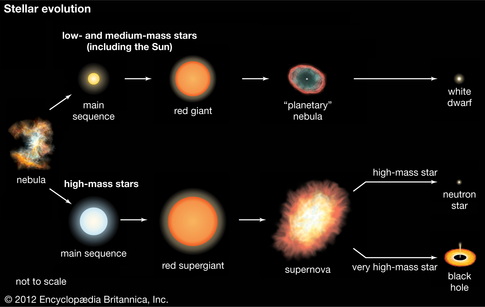

Stellar evolution as it is
Content of the article
| Mass (solar masses) | Time(years) | Spectral type |
|---|---|---|
| 60 | 3 million | O3 |
| 30 | 11 million | O7 |
| 10 | 32 million | B4 |
| 3 | 370 million | A5 |
| 1.5 | 3 billion | F5 |
| 1 | 10 billion | G2 |
| 0.1 | 1000s billion | M7 |
Introduction
Stellar evolution is the process by which a star changes over the course of time. Depending on the mass of the star, its lifetime can range from a few million years for the most massive to trillions of years for the least massive, which is considerably longer than the age of the universe.
The table shows the lifetimes of stars as a function of their masses.[1] All stars are formed from collapsing clouds of gas and dust, often called nebulae or molecular clouds. Over the course of millions of years, these protostars settle down into a state of equilibrium, becoming what is known as a main-sequence star.
Proto-stars
Stellar evolution is the process by which a star changes over the course of time. Depending on the mass of the star, its lifetime can range from a few million years for the most massive to trillions of years for the least massive, which is considerably longer than the age of the universe.
Here is very cool animation of star formation
Stellar evolution starts with the gravitational collapse of a giant molecular cloud. Typical giant molecular clouds are roughly 100 light-years (9.5×1014 km) across and contain up to 6,000,000 solar masses (1.2×1037 kg). As it collapses, a giant molecular cloud breaks into smaller and smaller pieces. In each of these fragments, the collapsing gas releases gravitational potential energy as heat. As its temperature and pressure increase, a fragment condenses into a rotating ball of superhot gas known as a protostar.
Here is the image of real star formation (hover mouse on it)
Filamentary structures are truly ubiquitous in the molecular cloud. Dense molecular filaments will fragment into gravitationally bound cores, which are the precursors of stars. Continuous accretion of gas, geometrical bending, and magnetic fields may control the detailed fragmentation manner of the filaments. In supercritical filaments, observations have revealed quasi-periodic chains of dense cores with spacing comparable to the filament inner width, and embedded two protostars with gas outflows.
Main sequence
A new star will sit at a specific point on the main sequence of the Hertzsprung–Russell diagram, with the main-sequence spectral type depending upon the mass of the star. Small, relatively cold, low-mass red dwarfs fuse hydrogen slowly and will remain on the main sequence for hundreds of billions of years or longer, whereas massive, hot O-type stars will leave the main sequence after just a few million years. A mid-sized yellow dwarf star, like the Sun, will remain on the main sequence for about 10 billion years. The Sun is thought to be in the middle of its main sequence lifespan.
Hertzsprung–Russell diagram
Comparison of main sequence stars of each spectral class

Supernova
A supernova (abbreviations: SN and SNe) is a powerful and luminous stellar explosion. This transient astronomical event occurs during the last evolutionary stages of a massive star or when a white dwarf is triggered into runaway nuclear fusion. The original object, called the progenitor, either collapses to a neutron star or black hole, or is completely destroyed. The peak optical luminosity of a supernova can be comparable to that of an entire galaxy before fading over several weeks or months.
Visualization of nova evolution
Very famous crab nebula
Classification of supernova
The earliest possible recorded supernova, known as HB9, could have been viewed and recorded by unknown Indian observers in 4500±1000 BC. Later, SN 185 was viewed by Chinese astronomers in 185 AD. The brightest recorded supernova was SN 1006, which occurred in 1006 AD in the constellation of Lupus, and was described by observers across China, Japan, Iraq, Egypt, and Europe. The widely observed supernova SN 1054 produced the Crab Nebula. Supernovae SN 1572 and SN 1604, the latest to be observed with the naked eye in the Milky Way galaxy, had notable effects on the development of astronomy in Europe because they were used to argue against the Aristotelian idea that the universe beyond the Moon and planets was static and unchanging.
| Type | Average peak absolute magnitude | Approximate energy (foe) |
|---|---|---|
| Ia | −19 | 1 |
| Ib/c-faint | −15 | 0.1 |
| Ib | −17 | 1 |
| Ic | −16 | 1 |
| Ic-bright | −22 | above 5 |
| II-b | −17 | 1 |
| Type | Average peak absolute magnitude | Approximate energy (foe) | Days to peak luminosity | Days from peak to 10% luminosity |
|---|---|---|---|---|
| Ia | −19 | 1 | 19 | around 60 |
| Ib/c-faint | −15 | 0.1 | 15–25 | unknown |
| Ib | −17 | 1 | 15–25 | 40–100 |
| Ic | −16 | 1 | 15–25 | 40–100 |
| Ic-bright | −22 | above 5 | roughly 25 | roughly 100 |
| II-b | −17 | 1 | around 20 | around 100 |
| II-L | −17 | 1 | around 13 | around 150 |
| II-P-faint | −14 | 0.1 | roughly 15 | unknown |
| II-P | −16 | 1 | around 15 | Plateau then around 50 |
| IIn | −17 | 1 | 12–30 or more | 50–150 |
| IIn-bright) | −22 | above 5 | above 50 | above 100 |